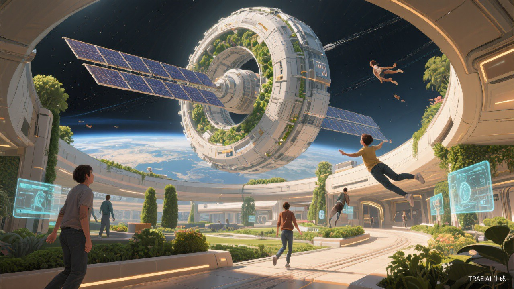
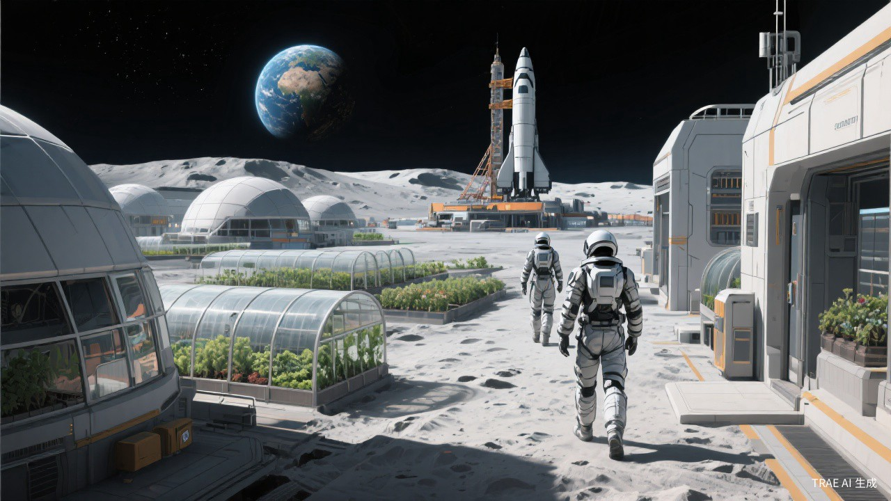
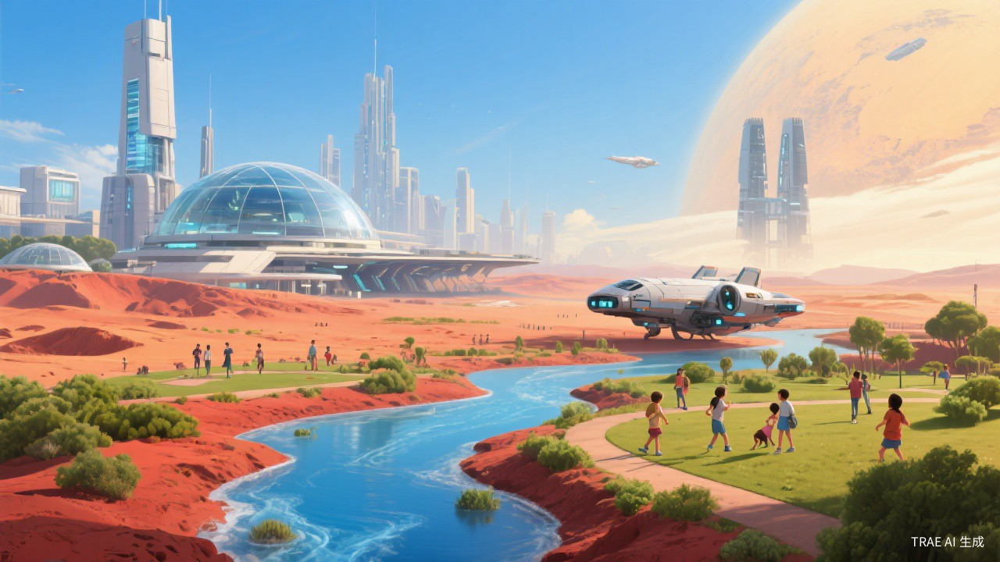

宇宙尺度之旅
从可观测宇宙的尺度出发，穿过超星系团与银河旋臂，
掠过太阳系，降落在你此刻站立的地方。
大约二十六个数量级：从 10²⁷ 米到几米。
手机双指捏合或上下滑动；桌面用滚轮、滑杆或方向键。空格键自动播放。
开始旅程
当前尺度
可观测宇宙
此刻 ≈ 10²⁷ 米
参照 ~930亿光年
×
太空哲学
"我们都是星尘。"
—— 卡尔·萨根
宇宙知识
可观测宇宙的直径约为930亿光年。
+
−
▶
⟲
物
乐
全
链
哲
景
∞ 宇宙
银河系
太阳系
地球
你
×

轨道太空殖民地
2076 · 近地轨道

月球永久基地
2076 · 月球表面

火星殖民城市
2076 · 火星表面
双指捏合，或在画面上上下滑动来缩放。底栏圆点可跳到某一站。